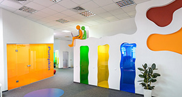

<!DOCTYPE html><html><head><meta charset="utf-8" /><link href="css/style.css" rel="stylesheet" /></head></html><body><header><div class="menu"><div class="logo"></div><nav><ul><li><a href="">Solutions</a></li><li><a href="">About</a></li><li><a href="">Careers</a></li><li><a href="">Contact</a></li></ul></nav></div></header><section><div class="banner"><p>Epam helps moneysupermarket deliver engaging digital experiences</p></div></section><section><div class="content"><div class="news"><h3>EPAM Acquires Alliance Global Services</h3><p class="subtitle">Increases Global Product Development Capabilities</p></div><div class="news"><h3>Q2 2015 Earnings Results Date Announced</h3><p class="subtitle">Results will be released on August 5, 2015</p></div><div class="news"><h3>EPAM Acquires NavigationArts</h3><p class="subtitle">Expands Digital Engagement Practice</p></div><div class="news"><h3>Top 25 IT-companies in Ukraine, July 2015</h3><p class="subtitle">Growth recovery and a new leader</p></div><div class="news"><h3>German-Ukrainian Business Forum</h3><p class="subtitle">Learn why Ukraine is a perfect sourcing location for IT services</p></div><div class="news"><h3>User Friendly 2015</h3><p class="subtitle">Stop by our Booth #2 to learn more about recent initiatives launched across the UX domain</p></div></div></section><footer><div class="footer-container"><nav><ul><li><a href="">Investor Relations</a></li><li><a href="">Contact</a></li><li><a href="">Privacy Policy</a></li></ul></nav><p> &copy; 2015 EPAM Systems. All Rights Reserved.</p></div></footer></body>
